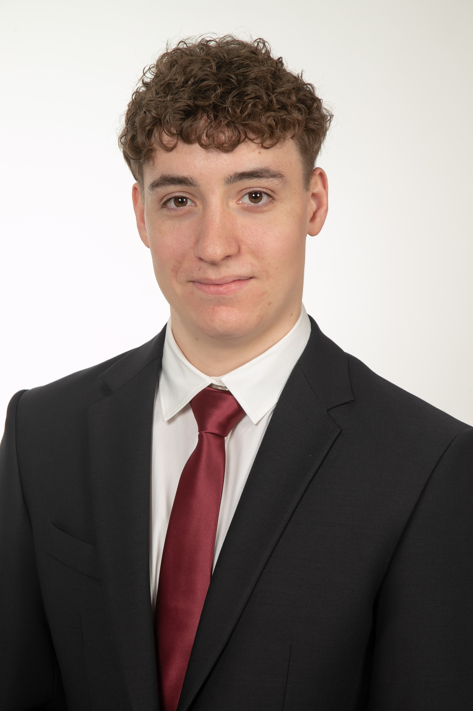

Szakos Tamás
Személyes adatok
Születési idő, hely: 2006.10.29, Szombathely
Állampolgárság: magyar
Lakcím: 9730 Kőszeg, Gábor Áron utca 2/a

Szakos Tamás vagyok, a VVSzC Gépipari és Informatikai Technikum ipari informatikai technikus szakos tanulója. Már általános iskolás korom óta érdekel a műszaki világ. Ebben szerepet játszik édesapám, hiszen ő autószerelőként dolgozik, illetve a hétköznapi életben is igazi ezermester. Már kisgyerekkorom óta mindig mellette voltam akár műszaki, akár ház körüli munka esetén.
Az általános iskolát a kőszegi Béri Balog Ádám Általános Iskolában végeztem, ottani tanulmányaim befejezése után felvételt nyertem a VVSzC Gépipari és Informatikai Technikumba, Szombathelyre. Középiskolai tanulmányaim során lehetőségem nyílt arra, hogy az elméleti tudás mellett gyakorlati tapasztalatot is szerezzek duális képzés keretében a TDK Hungary Components Kft.-nél, ahol valós ipari környezetben ismerkedhettem meg az ipari technológiákkal és lehetséges problémamegoldásokkal.
Szabadidőmben szívesen foglalkozom különböző áramkörökkel, gépekkel, elektromos berendezésekkel és rendszerekkel. Továbbá szeretek konditerembe járni edzeni, illetve némely hétvégenként Dj-skedem házibulikban, magánrendezvényeken és bálokon.